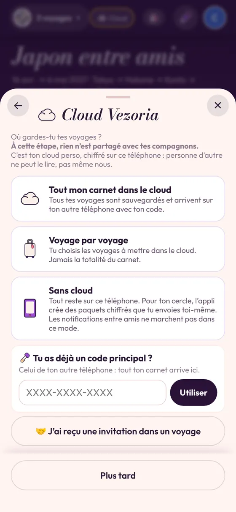
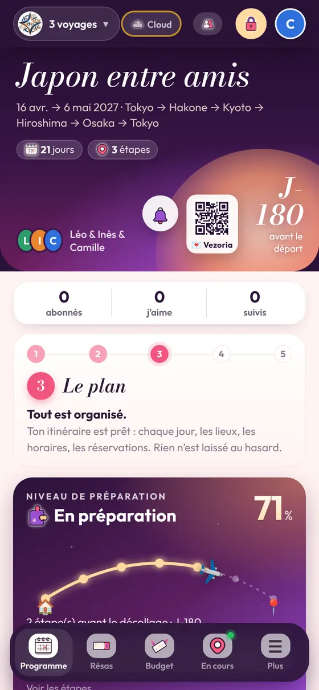

Gratuite, vraiment
Toutes les fonctions sont gratuites, sans publicité. Le Cloud Vezoria garde gratuitement jusqu’à 1 500 photos par carnet ; sans cloud, aucune limite. Pour plus de place en ligne, deux formules arrivent prochainement : Plus (≈ 10 000 photos) et Max (≈ 100 000 photos). Elles ne débloquent aucune fonction : seulement de la place pour les photos.
Sans compte pour commencer
Vous donnez un prénom et choisissez une couleur : c’est tout, et le carnet fonctionne sur votre téléphone. Une adresse e-mail (sans mot de passe) est demandée seulement pour mettre le carnet en ligne : le partager, le retrouver sur un autre appareil.

Vos voyages restent les vôtres
- Pas de pistage de votre utilisation.
- Un voyage partagé n’est lisible que par ceux qui ont reçu son invitation.
- Le Cloud Vezoria est facultatif : sans lui, tout reste sur votre téléphone.
- Le mode « lecture seule » évite les suppressions par erreur.
Hors ligne et en 14 langues
Le programme, les billets et les papiers restent consultables sans réseau. L’appli parle 14 langues, pratique pour les groupes d’amis venus de plusieurs pays.
Questions fréquentes
Comment l’installer sur iPhone ?
Ouvrez le lien de Vezoria dans Safari, touchez Partager puis « Sur l’écran d’accueil ».
Et sur Android ?
Installez Vezoria depuis le Play Store.
Et sur ordinateur ?
Ouvrez Vezoria dans Chrome ou Edge (PC ou Mac) et cliquez sur l’icône « Installer » de la barre d’adresse. Sur Mac, Safari propose aussi Fichier → « Ajouter au Dock ».